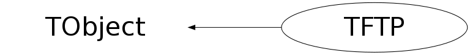

Function Members (Methods)
public:
| TFTP(const char* url, Int_t parallel = 1, Int_t wsize = kDfltWindowSize, TSocket* sock = 0) | |
| virtual | ~TFTP() |
| void | TObject::AbstractMethod(const char* method) const |
| Bool_t | AccessPathName(const char* path, EAccessMode mode = kFileExists, Bool_t print = kFALSE) |
| virtual void | TObject::AppendPad(Option_t* option = "") |
| void | Ascii() |
| void | ascii() |
| void | bin() |
| void | Binary() |
| virtual void | TObject::Browse(TBrowser* b) |
| void | bye() |
| void | cd(const char* dir) const |
| Int_t | ChangeDirectory(const char* dir) const |
| Int_t | ChangePermission(const char* file, Int_t mode) const |
| void | chmod(const char* file, Int_t mode) const |
| static TClass* | Class() |
| virtual const char* | TObject::ClassName() const |
| virtual void | TObject::Clear(Option_t* = "") |
| virtual TObject* | TObject::Clone(const char* newname = "") const |
| Int_t | Close() |
| virtual Int_t | TObject::Compare(const TObject* obj) const |
| virtual void | TObject::Copy(TObject& object) const |
| virtual void | TObject::Delete(Option_t* option = "")MENU |
| Int_t | DeleteDirectory(const char* dir) const |
| Int_t | DeleteFile(const char* file) const |
| virtual Int_t | TObject::DistancetoPrimitive(Int_t px, Int_t py) |
| virtual void | TObject::Draw(Option_t* option = "") |
| virtual void | TObject::DrawClass() constMENU |
| virtual TObject* | TObject::DrawClone(Option_t* option = "") constMENU |
| virtual void | TObject::Dump() constMENU |
| virtual void | TObject::Error(const char* method, const char* msgfmt) const |
| virtual void | TObject::Execute(const char* method, const char* params, Int_t* error = 0) |
| virtual void | TObject::Execute(TMethod* method, TObjArray* params, Int_t* error = 0) |
| virtual void | TObject::ExecuteEvent(Int_t event, Int_t px, Int_t py) |
| virtual void | TObject::Fatal(const char* method, const char* msgfmt) const |
| virtual TObject* | TObject::FindObject(const char* name) const |
| virtual TObject* | TObject::FindObject(const TObject* obj) const |
| void | FreeDirectory(Bool_t print = kFALSE) |
| void | get(const char* file, const char* localName = 0) |
| Int_t | GetBlockSize() const |
| const char* | GetDirEntry(Bool_t print = kFALSE) |
| virtual Option_t* | TObject::GetDrawOption() const |
| static Long_t | TObject::GetDtorOnly() |
| Long64_t | GetFile(const char* file, const char* localName = 0) |
| virtual const char* | TObject::GetIconName() const |
| Int_t | GetMode() const |
| virtual const char* | TObject::GetName() const |
| virtual char* | TObject::GetObjectInfo(Int_t px, Int_t py) const |
| static Bool_t | TObject::GetObjectStat() |
| virtual Option_t* | TObject::GetOption() const |
| Int_t | GetPathInfo(const char* path, FileStat_t& buf, Bool_t print = kFALSE) |
| Long64_t | GetRestartAt() const |
| TSocket* | GetSocket() const |
| virtual const char* | TObject::GetTitle() const |
| virtual UInt_t | TObject::GetUniqueID() const |
| virtual Bool_t | TObject::HandleTimer(TTimer* timer) |
| virtual ULong_t | TObject::Hash() const |
| virtual void | TObject::Info(const char* method, const char* msgfmt) const |
| virtual Bool_t | TObject::InheritsFrom(const char* classname) const |
| virtual Bool_t | TObject::InheritsFrom(const TClass* cl) const |
| virtual void | TObject::Inspect() constMENU |
| void | TObject::InvertBit(UInt_t f) |
| virtual TClass* | IsA() const |
| virtual Bool_t | TObject::IsEqual(const TObject* obj) const |
| virtual Bool_t | TObject::IsFolder() const |
| Bool_t | TObject::IsOnHeap() const |
| Bool_t | IsOpen() const |
| virtual Bool_t | TObject::IsSortable() const |
| Bool_t | TObject::IsZombie() const |
| Int_t | ListDirectory(Option_t* cmd = "") const |
| virtual void | ls(Option_t* cmd = "") const |
| Int_t | MakeDirectory(const char* dir, Bool_t print = kFALSE) const |
| void | TObject::MayNotUse(const char* method) const |
| void | mkdir(const char* dir) const |
| void | mv(const char* file1, const char* file2) const |
| virtual Bool_t | TObject::Notify() |
| void | TObject::Obsolete(const char* method, const char* asOfVers, const char* removedFromVers) const |
| Bool_t | OpenDirectory(const char* name, Bool_t print = kFALSE) |
| static void | TObject::operator delete(void* ptr) |
| static void | TObject::operator delete(void* ptr, void* vp) |
| static void | TObject::operator delete[](void* ptr) |
| static void | TObject::operator delete[](void* ptr, void* vp) |
| void* | TObject::operator new(size_t sz) |
| void* | TObject::operator new(size_t sz, void* vp) |
| void* | TObject::operator new[](size_t sz) |
| void* | TObject::operator new[](size_t sz, void* vp) |
| virtual void | TObject::Paint(Option_t* option = "") |
| virtual void | TObject::Pop() |
| virtual void | Print(Option_t* opt = "") const |
| Int_t | PrintDirectory() const |
| void | put(const char* file, const char* remoteName = 0) |
| Long64_t | PutFile(const char* file, const char* remoteName = 0) |
| void | pwd() const |
| virtual Int_t | TObject::Read(const char* name) |
| virtual void | TObject::RecursiveRemove(TObject* obj) |
| Int_t | RenameFile(const char* file1, const char* file2) const |
| void | TObject::ResetBit(UInt_t f) |
| void | rm(const char* file) const |
| void | rmdir(const char* dir) const |
| virtual void | TObject::SaveAs(const char* filename = "", Option_t* option = "") constMENU |
| virtual void | TObject::SavePrimitive(ostream& out, Option_t* option = "") |
| void | TObject::SetBit(UInt_t f) |
| void | TObject::SetBit(UInt_t f, Bool_t set) |
| void | SetBlockSize(Int_t blockSize) |
| virtual void | TObject::SetDrawOption(Option_t* option = "")MENU |
| static void | TObject::SetDtorOnly(void* obj) |
| static void | TObject::SetObjectStat(Bool_t stat) |
| void | SetRestartAt(Long64_t at) |
| virtual void | TObject::SetUniqueID(UInt_t uid) |
| virtual void | ShowMembers(TMemberInspector& insp) |
| virtual void | Streamer(TBuffer& b) |
| void | StreamerNVirtual(TBuffer& b) |
| virtual void | TObject::SysError(const char* method, const char* msgfmt) const |
| Bool_t | TObject::TestBit(UInt_t f) const |
| Int_t | TObject::TestBits(UInt_t f) const |
| virtual void | TObject::UseCurrentStyle() |
| virtual void | TObject::Warning(const char* method, const char* msgfmt) const |
| virtual Int_t | TObject::Write(const char* name = 0, Int_t option = 0, Int_t bufsize = 0) |
| virtual Int_t | TObject::Write(const char* name = 0, Int_t option = 0, Int_t bufsize = 0) const |
protected:
| virtual void | TObject::DoError(int level, const char* location, const char* fmt, va_list va) const |
| void | TObject::MakeZombie() |
Data Members
public:
| enum { | kDfltBlockSize | |
| kDfltWindowSize | ||
| kBinary | ||
| kAscii | ||
| }; | ||
| enum TObject::EStatusBits { | kCanDelete | |
| kMustCleanup | ||
| kObjInCanvas | ||
| kIsReferenced | ||
| kHasUUID | ||
| kCannotPick | ||
| kNoContextMenu | ||
| kInvalidObject | ||
| }; | ||
| enum TObject::[unnamed] { | kIsOnHeap | |
| kNotDeleted | ||
| kZombie | ||
| kBitMask | ||
| kSingleKey | ||
| kOverwrite | ||
| kWriteDelete | ||
| }; |
private:
| Int_t | fBlockSize | size of data buffer used to transfer |
| Long64_t | fBytesRead | number of bytes received |
| Long64_t | fBytesWrite | number of bytes sent |
| TString | fCurrentFile | file currently being get or put |
| Bool_t | fDir | Indicates if a remote directory is open |
| TString | fHost | FQDN of remote host |
| Int_t | fLastBlock | last block successfully transfered |
| Int_t | fMode | binary or ascii file transfer mode |
| Int_t | fParallel | number of parallel sockets |
| Int_t | fPort | port to which to connect |
| Int_t | fProtocol | rootd protocol level |
| Long64_t | fRestartAt | restart transmission at specified offset |
| TSocket* | fSocket | ! connection to rootd |
| TString | fUser | remote user |
| Int_t | fWindowSize | tcp window size used |
| static Long64_t | fgBytesRead | number of bytes received by all TFTP objects |
| static Long64_t | fgBytesWrite | number of bytes sent by all TFTP objects |
Class Charts
{kind=link}
{kind=link}
{kind=link}
{kind=link}

Function documentation
TFTP(const char* url, Int_t parallel = 1, Int_t wsize = kDfltWindowSize, TSocket* sock = 0)
Open connection to host specified by the url using par parallel sockets. The url has the form: [root[s,k]://]host[:port]. If port is not specified the default rootd port (1094) will be used. Using wsize one can specify the tcp window size. Normally this is not needed when using parallel sockets. An existing connection (TSocket *sock) can also be used to establish the FTP session.
Int_t Recv(Int_t& status, EMessageTypes& kind) const
Return status from rootd server and message kind. Returns -1 in case of error otherwise 8 (sizeof 2 words, status and kind).
void SetBlockSize(Int_t blockSize)
Make sure the block size is a power of two, with a minimum of 32768.
Long64_t PutFile(const char* file, const char* remoteName = 0)
Transfer file to remote host. Returns number of bytes sent or < 0 in case of error. Error -1 connection is still open, error -2 connection has been closed. In case of failure fRestartAt is set to the number of bytes correclty transfered. Calling PutFile() immediately afterwards will restart at fRestartAt. If this is not desired call SetRestartAt(0) before calling PutFile(). If rootd reports that the file is locked, and you are sure this is not the case (e.g. due to a crash), you can force unlock it by prepending the remoteName with a '-'.
Long64_t GetFile(const char* file, const char* localName = 0)
Transfer file from remote host. Returns number of bytes received or < 0 in case of error. Error -1 connection is still open, error -2 connection has been closed. In case of failure fRestartAt is set to the number of bytes correclty transfered. Calling GetFile() immediately afterwards will restart at fRestartAt. If this is not desired call SetRestartAt(0) before calling GetFile(). If rootd reports that the file is locked, and you are sure this is not the case (e.g. due to a crash), you can force unlock it by prepending the file name with a '-'.
Int_t ChangeDirectory(const char* dir) const
Change the remote directory. If the remote directory contains a .message file and it is < 1024 characters then the contents is echoed back. Returns 0 in case of success and -1 in case of failure.
Int_t MakeDirectory(const char* dir, Bool_t print = kFALSE) const
Make a remote directory. Anonymous users may not create directories. Returns 0 in case of success and -1 in case of failure.
Int_t DeleteDirectory(const char* dir) const
Delete a remote directory. Anonymous users may not delete directories. Returns 0 in case of success and -1 in case of failure.
Int_t ListDirectory(Option_t* cmd = "") const
List remote directory. With cmd you specify the options and directory to be listed to ls. Returns 0 in case of success and -1 in case of failure.
Int_t PrintDirectory() const
Print path of remote working directory. Returns 0 in case of succes and -1 in cse of failure.
Int_t RenameFile(const char* file1, const char* file2) const
Rename a remote file. Anonymous users may not rename files. Returns 0 in case of success and -1 in case of failure.
Int_t DeleteFile(const char* file) const
Delete a remote file. Anonymous users may not delete files. Returns 0 in case of success and -1 in case of failure.
Int_t ChangePermission(const char* file, Int_t mode) const
Change permissions of a remote file. Anonymous users may not chnage permissions. Returns 0 in case of success and -1 in case of failure.
Bool_t OpenDirectory(const char* name, Bool_t print = kFALSE)
const char * GetDirEntry(Bool_t print = kFALSE)
Get directory entry via rootd. Returns 0 in case no more entries or in case of error.
Int_t GetPathInfo(const char* path, FileStat_t& buf, Bool_t print = kFALSE)
Get info about a file. Info is returned in the form of a FileStat_t structure (see TSystem.h). The function returns 0 in case of success and 1 if the file could not be stat'ed.
Bool_t AccessPathName(const char* path, EAccessMode mode = kFileExists, Bool_t print = kFALSE)
Returns kFALSE if one can access a file using the specified access mode. Mode is the same as for the Unix access(2) function. Attention, bizarre convention of return value!!
void put(const char* file, const char* remoteName = 0)
standard ftp equivalents...
{ PutFile(file, remoteName); }